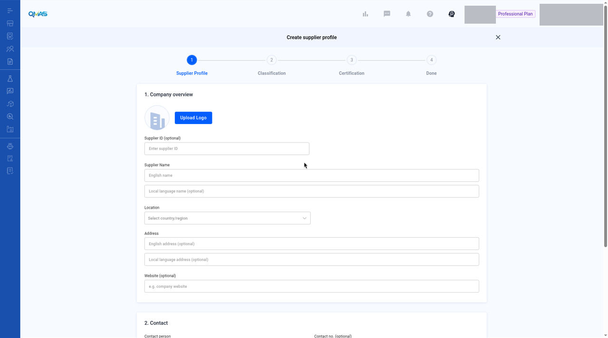
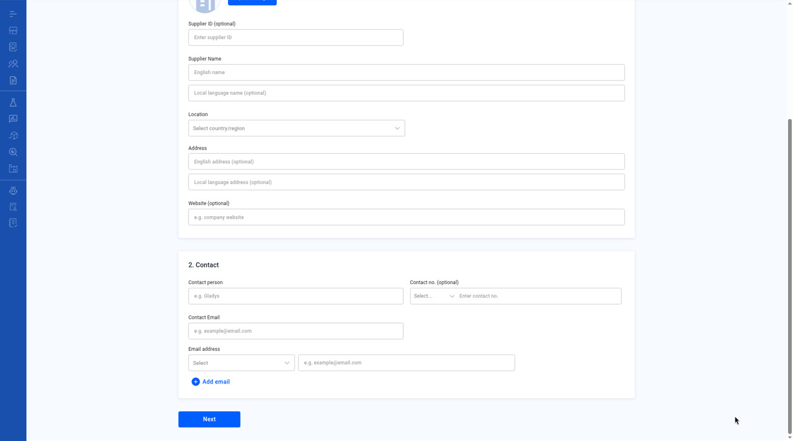
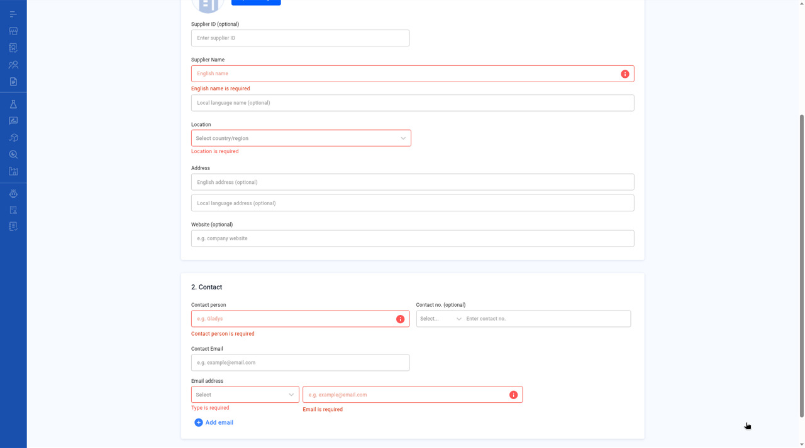

Supplier Management — Create a Supplier
Add a supplier profile so you can link it to products, factories, documents and service jobs.
Screenshot slots: 4 reviewed and 3 pending privacy review.
Overview
- Open Supplier / Factory Management, stay on the Supplier tab and click Create Supplier.
- Supplier Profile: company overview and contact.
- Classification (optional): product category and tags.
- Certification (optional): add certificates, then click Done.
- The supplier profile opens.
Step-by-step
1. Open Supplier / Factory Management
In the left menu, open Supplier / Factory Management. The Supplier tab lists your suppliers with their location, category, status, connect status and rating.
Click Create Supplier. You can also use Import Supplier to add many suppliers from a file, or Invite Supplier to invite a supplier to connect with you on QMAS.

2. Supplier Profile — company overview
- Upload Logo (optional).
- Supplier ID (optional): your own reference number.
- Supplier Name: English name (required) and local-language name (optional).
- Location: country or region, then province and city.
- Address and Website (optional).

3. Supplier Profile — contact
Under 2. Contact, fill in the Contact person, Contact Email and at least one Email address. For each email address, choose a type: Company, QA, Sales or Other. Click Add email for more. Contact no. is optional.

If a required field is empty when you click Next, it turns red, for example “Type is required” or “Email is required”. This screenshot also shows English name is required, Location is required, and Contact person is required. Next triggers the errors, not Submit. The fields still show empty or example placeholders, not a completed profile.

4. Classification (optional)
Click Select category to choose the product categories this supplier offers. Click Select tag to add your own tags. Click Next.
Image pending privacy review
File name: 05-step2-classification.jpg
Reviewed replacement image not available yet. Follow the written steps above.
5. Certification (optional)
Click Add to upload a certificate. Choose the certification type, upload the file, and fill in the rating, issue party and dates. Click Done to create the supplier.
Image pending privacy review
File name: 06-step3-certification.jpg
Reviewed replacement image not available yet. Follow the written steps above.
6. Done — supplier profile
The supplier profile opens. Use the tabs Overview, Product, Factory, Certificate, Document and Compliance Data to manage everything linked to this supplier. Click the pencil icon next to the name, or next to Contact, to edit.
Image pending privacy review
File name: 07-supplier-profile.jpg
Reviewed replacement image not available yet. Follow the written steps above.
Tips
FAQ
- How do I create a new supplier?
- Go to Supplier / Factory Management (https://qmas.icw.io/supplier-manager/suppliers), click Create Supplier, fill in Supplier Profile, then Next, Next and Done. Direct link: https://qmas.icw.io/supplier-manager/create
- Can I add many suppliers at once?
- Yes. Click Import Supplier on the Supplier tab.
- How do I invite a supplier to QMAS?
- Click Invite Supplier on the Supplier tab.
- How do I edit a supplier?
- Open the supplier from the list and click the pencil icon next to its name or next to Contact.
Help Center additions and remaining gaps
Source-documented — profile, import, and invite (last edited 2026-01-16)
Source: Manage your QMAS Supplier Compliance Profile, https://app.notion.com/p/aa532b63c9554db99b57676ee83d489c. It was not marked “Updated November 2026”. Labels need a dev check before they are published as current UI.
The 2024 setup guide is an older subset (no Import or Invite) and still says “top menu bar”. Prefer the create steps above, and the January 2026 article for the items below.
Edit and add documents (Help Center): edit company and contact information with the icon next to each section. Edit categories and tags with the pen icon. Add rating lists Responsiveness, Quality, Pricing, and Market Awareness. Add Internal notes for others in the company. Add missed certificates or documents later in the CERTIFICATE and DOCUMENT sections.
Product and Factory linkage (Help Center): related products use +Product Linkage (existing product list, or New Product). Related factories are under FACTORY, then +Factory Linkage (Current Factory or New Factory).
Import Supplier (Help Center): click Import Supplier, then Download here for the template, fill it in (the article says create, update, and delete are supported), upload, and click Next. A toast confirms completion.
Invite / connect a supplier “allows you to assign Document Review jobs to your connected suppliers.”
- Click Invite Supplier.
- Choose a supplier from the existing list, or invite a new supplier by entering their name.
- Optionally enter a custom message for the invitation email.
- Click Invite. The Help Center says an invitation email is sent to the supplier’s email address.
- The supplier can accept via the invite link or, if they already have a QMAS account, via a pop-up the next time they log in.
Help Center connection statuses: Invite (invitation sent), No Connection (cannot interact via the platform), Connected (can be assigned Document Review jobs).
Remaining gaps
- Current-UI confirmation of the labels above, especially linkage buttons and connection statuses.
- Screenshots for import, invite, ratings, notes, and tabs other than Overview.
- List filters, Export, and the row toolbar.
- Contact Email versus Email address, and Title Case. Filed bugs; re-check on dev. Do not invent the corrected labels.
Help Center reconciliation 2026-11-13 (HKT). Original Help Center not edited. This draft is not the public guide at the marconip2026 site. No Dify upload.